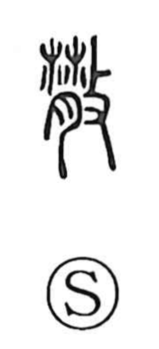

散

Kun: chiru, chirasu, chirakasu, chirakaru | On: san
to scatter ・ to disperse ・ to break up
Explanation
散 joins 攴, a hand striking with a rod, to a piece of sinewy meat. The upper part of the meat element marks its tough fibres or tendons, with 肉 below. Pounding loosens the fibres and breaks the firm piece apart.
This beating apart gives ‘scatter,’ ‘disperse,’ and ‘come loose.’ Something previously held together separates into smaller pieces or spreads in different directions. The sense can apply to a gathering that breaks up, materials distributed over an area, or an order that has become disorganized. Because the pounded scraps were not choice meat, 散 also acquired uses for what was of little value or without a useful employment.